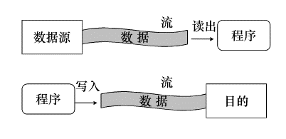

文件流、网络操作、服务端Web开发基础
相关链接：
实现思路：
fs模块的文件监视功能监视指定MD文件marked包提供的markdown to html功能将改变后的MD文件转换为HTMLconst fs = require('fs');
const path = require('path');
var marked = require('marked');
var bs = require('browser-sync').create();
var target = path.join(__dirname, process.argv[2] || './README.md');
var filename = path.basename(target, path.extname(target)) + '.html';
var targetHtml = path.join(path.dirname(target), filename);
bs.init({
server: path.dirname(target),
index: filename,
notify: false
});
bs.reload(filename);
var template = `<!DOCTYPE html>
<html lang="en">
<head>
<meta charset="UTF-8">
<title></title>
<style>{{{styles}}}</style>
</head>
<body>
<article class="markdown">
{{{body}}}
</article>
</body>
</html>
`;
fs.readFile(path.join(__dirname, './markdown.css'), 'utf8', (error, css) => {
if (error) throw error;
template = template.replace('{{{styles}}}', css);
var handler = (current, previous) => {
fs.readFile(target, 'utf8', (error, content) => {
var html = template.replace('{{{body}}}', marked(content));
fs.writeFile(targetHtml, html, (error) => {
if (!error) {
console.log(`updated@${new Date()}`);
bs.reload(filename);
}
});
});
};
handler();
fs.watchFile(target, { interval: 100 }, handler);
});
现实过程的流
在程序开发的概念中

在 Node 核心模块 fs 中定义了一些与流相关的 API
如何计算循环节长度呢？
想想我们手算，如果余数比除数小，我们会在后面补0然后再除。也就是说补零之后的数是下一次的被除数。如果被除数重复出现，除数确定的，那么商和余数也就是一样的。这时，循环节就出现了。
下面的函数分为两部分，
补零操作 查找有没有同样的被除数存在，如果有，就找到了循环节，计算循环节长度并返回。在没有找到的前提下，把当前被除数记录下来，并得到余数作为下一次的被除数。 这里需要注意，如果某一次出现了除尽的情况，说明该分数是有限小数，循环节长度是0。 JavaScript
console.log(foo(11, 3));
console.log(foo(1, 7));;
console.log(foo(2, 10));;
function foo(a, b) {
if (!(a % b)) {
return ${a}÷${b}:${a / b};
}
var all = (a / b).toString().split('.');
var i = getCycleSection(a, b);
if(i)
return ${a}÷${b}: ${all[0]}.{${all[1].substr(0, i) }};
return ${a}÷${b}: ${a / b};
}
function getCycleSection(n, m) {
var temp = [];
while (true) {
while (n < m) {
n *= 10;
}
var index = temp.indexOf(n);
if (index >= 0) {
return temp.length - index;
}
temp.push(n);
n %= m;
if (!n)
return 0;
}
}